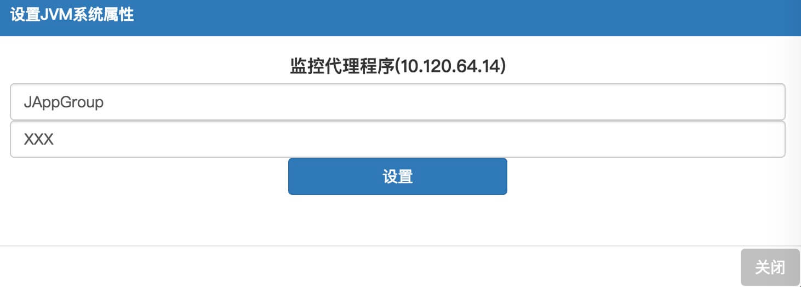
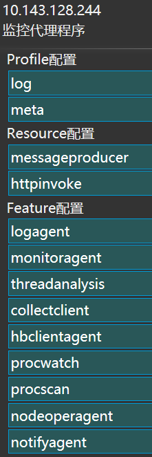
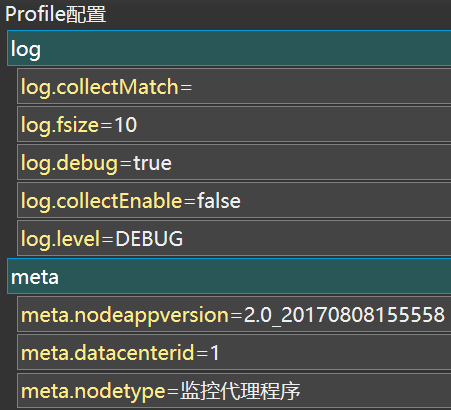
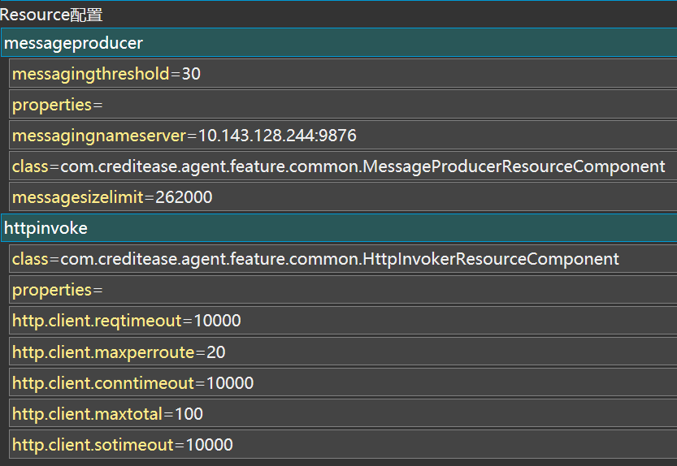
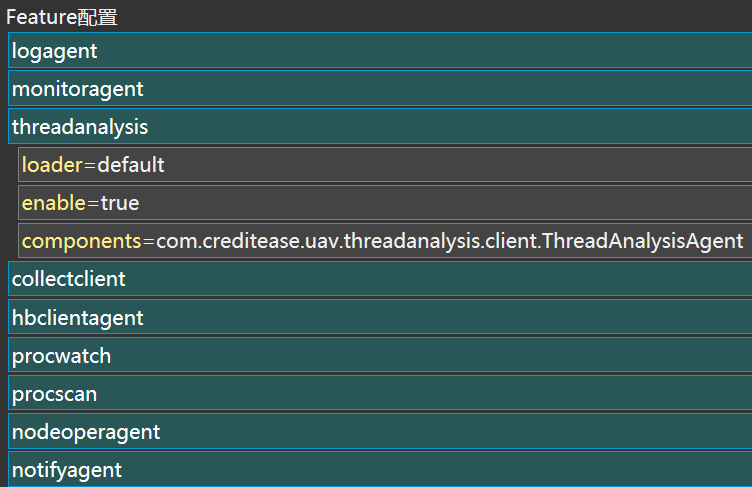
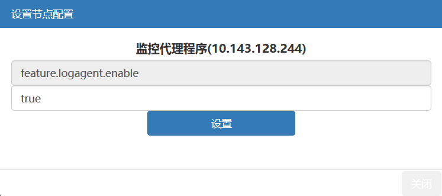

UAV节点进程远程控制
修改属性
可以改变UAV监控代理程序的jvm系统属性(SystemProperties)
用途：改变UAV监控代理程序的应用组
方式：指定JAppGroup属性
效果：UAV监控代理程序的应用组如果改变，则该应用容器上所有Java进程的应用组都会改变，这些Java进程对应的应用实例的应用组也会改变
举例：如果某机器10.1.1.1原本属于应用组UAV，通过改变UAV监控代理程序的JAppGroup属性为SIA，则该机器上的Tomcat的应用组会变成SIA，Tomcat上的应用的应用组也会变成SIA

重启节点
点击，并确认后，UAV监控代理程序会重启，该过程监控会中断，直到重启完成后继续监控。
停止节点
点击，并确认后，UAV监控代理程序会停止，此后监控就停止了，经过一段时间后，界面的该应用容器也会消失。
安装MOF
点击，并确认后，UAV监控代理程序会在当前用户（UAV监控代理程序使用的用户）的配置文件下增加一个环境变量 CATALINA_OPTS。当Tomcat启动时，会读取这个环境变量，从而实现对该Tomcat的监控；如果不启动则不会生效。
卸载MOF
点击，并确认后，UAV监控代理程序会从当前用户的配置文件中删除环境变量CATALINA_OPTS。但Tomcat监控不会停止，需要重启。
升级节点
升级UAV监控代理程序到指定版本。升级过程中，会启动一个升级进程，自动下载、替换、重启UAV监控代理程序。升级完毕，升级进程退出。
升级MOF
升级UAV监控捕获框架到指定版本。升级过程中，会启动一个升级进程，自动下载、替换，但是不会重启Tomcat。升级完毕后，升级进程退出。
配置管理
修改UAV节点的Profile配置、Resource配置、Feature配置。其中Profile主要包括log与meta的配置；Resource主要包括messageproducer与httpinvoke的配置；Feature中配置了进程运行时所必须的feature。

Profile配置

log：
- log.level：有INFO, ERR, WARNING, DEBUG, FINE, FINER, ALL七个等级
- log.debug：是否在level为DEBUG时输出此日志
- log.fsize：单独日志文件的大小(单位为MB)
- log.collectEnable：日志是否可以被归集
- log.collectMatch：若日志可以被归集 需要符合的文件正则表达式
meta：
- meta.nodeappversion：当前应用的版本
- meta.datacenterid：datacenter的ID值
- meta.nodetype：被部署的UAV进程名称
Resource配置

messageproducer：
- messagingthreshold：message需要压缩的门槛(单位为KB)
- properties：属性配置，例如
= , = ,... - messagingnameserver：接收消息的服务器地址
- class：messageproducer的实现类
- messagesizelimit：压缩后message的大小限制，超过限制将不能提交
httpinvoke：
- class：httpinvoker的实现类
- properties：属性配置，例如
= , = ,... - http.client.reqtimeout：connection manager的连接请求超时时间(单位毫秒)
- http.client.maxperroute：单路由最大并发数
- http.client.conntimeout：server的连接请求超时时间(单位毫秒)
- http.client.maxtotal：连接池最大并发连接数
- http.client.sotimeout：数据传输处理时间(单位毫秒)
Feature配置

不同的feature有不同的配置，但是有三个配置是必不可少的：
- loader：UAV使用什么方式来加载feature
- enable：是否启用此feature
components：feature的实现类，可以加载多个
修改配置
可以改变Profile、Resource、Feature配置中的各种属性，点击特定属性即可修改。例如，若修改Feature中logagent的enable配置：
